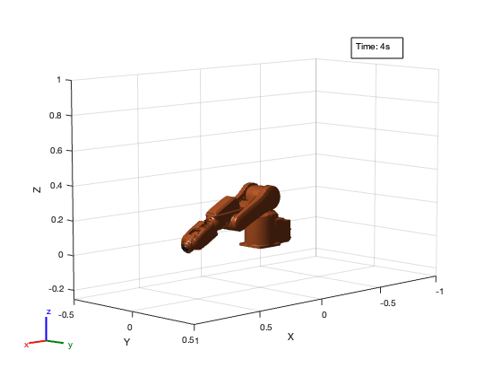

ROB599_HW3_P2
Simiulating a PD Controller for Robot Arm.
Contents
Cleanup
clear
clc
close all
Define Numerical Parameters of the System
% Inertia Terms param.m1 = 7.848; param.m2 = 4.49; param.I1 = 0.176; param.I2 = 0.0411; % Geometry Terms param.l1 = 0.3; param.lc1 = 0.1554; param.lc2 = 0.0341; % Fundamental Constants param.g = 9.81; % Gains param.kp1 = 50; param.kd1 = 10; param.kp2 = 50; param.kd2 = 10; % Limits param.tau1Max = 50; param.tau1Min = -50; param.tau2Max = 50; param.tau2Min = -50;
Define Simulation Prameters
% Initial Conditions t = linspace(0,4,10000)'; x0 = [0;0;0;0]; tau = [0; 0]; % Target Trajectory % Step Response for Shoulder and Elbow q1d_start = pi/2; % start q1d_new = 0; % new t1_step = 2; % time of start -> new transition q2d_start = q1d_start; q2d_new = q1d_new; t2_step = t1_step; q1d_vec = step(q1d_start, q1d_new, t, t1_step); q2d_vec = step(q2d_start, q2d_new, t, t2_step); % Generate Stamped Target State Trajectory nan_vector = nan(size(q1d_vec)); x_target = [q1d_vec, nan_vector, q2d_vec, nan_vector]; t_target = t; stamped_x_target = [x_target, t_target]';
Run Simulation
[tout, xout] = ode45(@(t, x) manipulator(t, x, @PDController, param, ... stamped_x_target), t, x0); % Compute Torques tau_values = postComputeTorques(tout, xout, @manipulator, @PDController, param, stamped_x_target);
Postprocess Data
% Compute the Errors error_vals_1 = computeErrors(xout(:,1), x_target(:,1)); error_vals_2 = computeErrors(xout(:,3), x_target(:,3)); error_vals =[error_vals_1, error_vals_2]; % Generate the Error Target Vector zero_vector = getZeroVec(tout);
Animation
robotAnimation(tout, xout);
Plot the Results
Ommited for Brevity
Helper Functions
Various Helper Functions to Execute Code above.
% Computes the Torque Values at Give State Vector function tau_values = postComputeTorques(tout, xout, model_ref, controller_ref, param, ref) num_steps = length(tout); tau_values = zeros(num_steps, 2); for i = 1:num_steps [~, tau] = model_ref(tout(i), xout(i,:)', controller_ref, param, ref); tau_values(i,:) = tau'; end end % Computes the Error Vector function error_vals = computeErrors(x_actual, x_ref) error_vals = x_ref - x_actual; end % Generates a Zero Vector function zero_vector = getZeroVec(t_out) zero_vector = zeros(size(t_out)); end